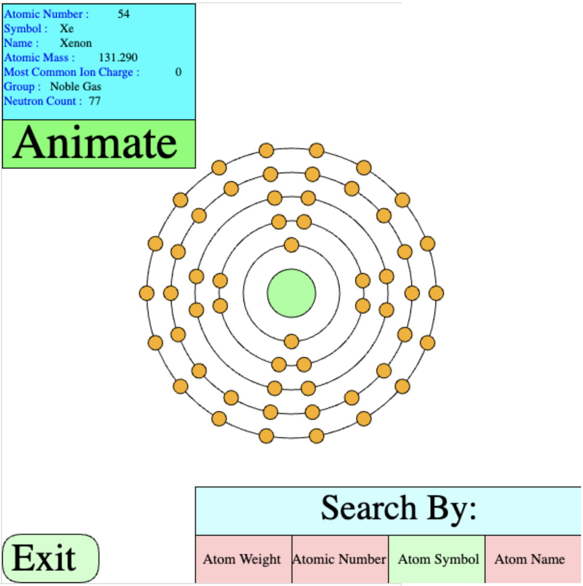
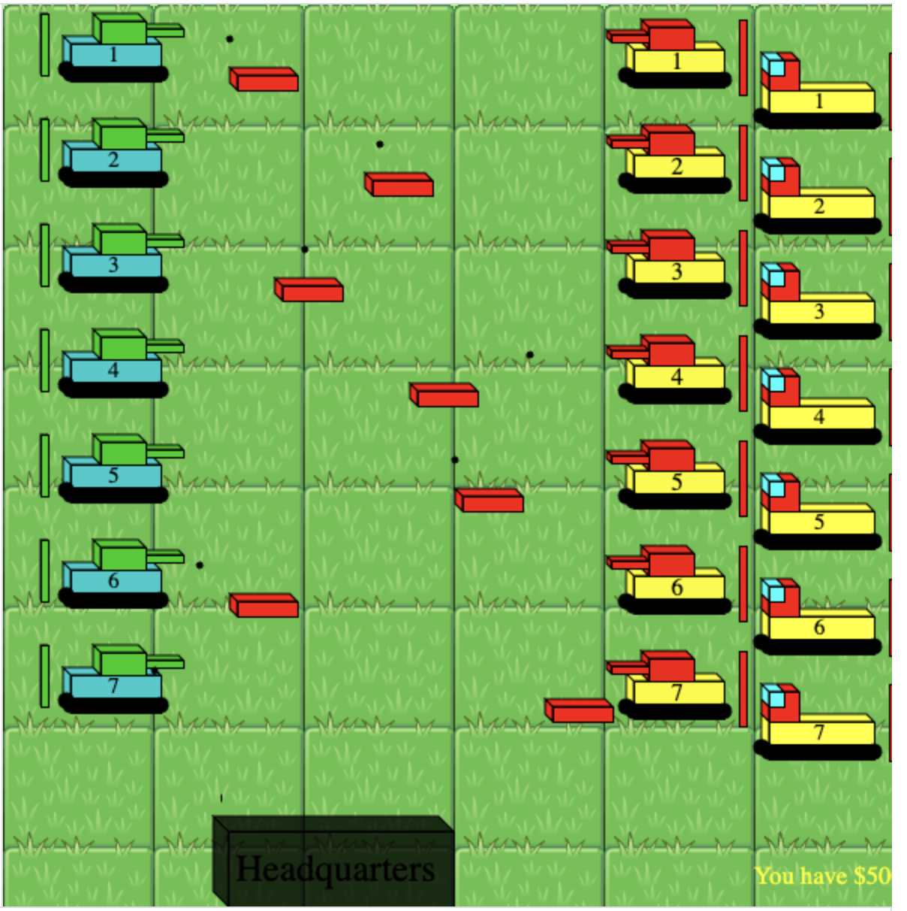
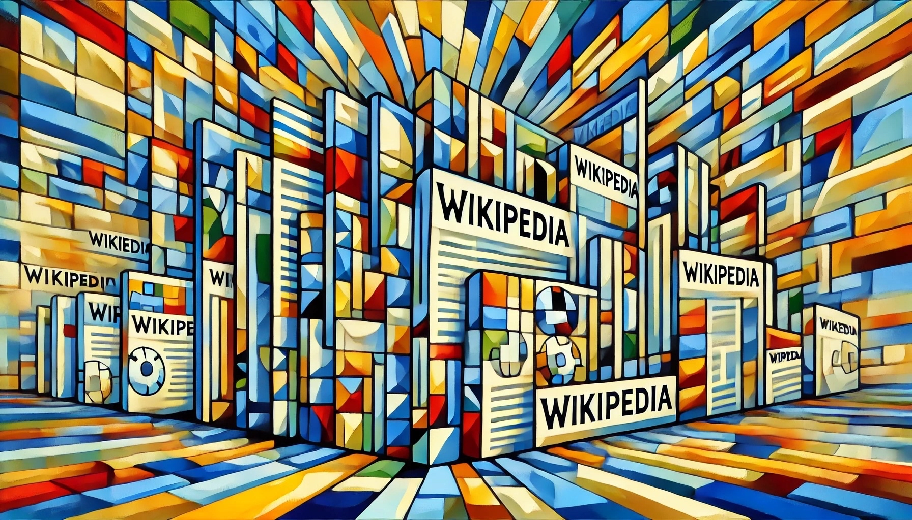

My Software Journey
I first got into programming through curiosity rather than formal instruction. Back in grade 4 or 5, I was exploring Khan Academy and discovered the Computer Programming in JavaScript tutorials. I spent hours experimenting, debugging (often chasing down a missing bracket or semicolon), and creating small projects. This curiosity soon turned into a passion I wanted to share, leading me to start my first coding club in grade 6 to teach my peers the basics of programming.
As I went through high school, I began applying my software skills to classwork. I built tools like Atoms 2! and Meiosis Explainer to automate repetitive assignments and visualize biological processes. Through these early projects, I learned the importance of writing modular, reusable code using object‑oriented principles—often after having to completely rebuild inefficient first attempts. Over time, I expanded my skills into Unity, Blender, and basic game design, which set me up for more ambitious projects.
Now at UBC as a Biomedical Engineering student, I continue to integrate programming into my studies and work. Protein Analyzer was one of my first projects to support biomedical research, automating parts of the manual research we performed in BMEG courses. I also completed my first formal computer engineering courses, APSC 160 and CPEN 221, where I gained a strong foundation in software design, documentation, and optimization. Today, I apply these skills at Medic Foundation, developing and maintaining a web application to facilitate volunteer‑to‑senior connections in the Lower Mainland - bridging my passion for software and biomedical impact.
Below you can see a select few of my projects that I have completed, starting from early high school to my current projects.
JavaScript Projects
Atoms 2!
This JavaScript program, Atoms 2!, was built by me in grade 9 during our chemistry unit in high school. Many of the homework assignments were quite repetitive and so I thought it would be useful to create a tool that could automate some of my work. This project is able to draw an animated Bohr model for many elements, and provide detailed information on each. It can also generate the proper formula for 2 element compounds. As this project is relatively old, it does not follow best principles, but demonstrates my strong understanding of logic, efficient data storage and passion for automation.

Tanks!
This was one of my final javasript programming projects, Tanks!. The previous version had many repetitive components and started to lag after the LOC reached 2k. This edition is far more eficient as it uses OOP principles and modular functions allowing for more complex gameplay. There are multiple game modes within it as well as upgrades that can be performed on your own units. After completion of this, I moved onto learning C# and developing Unity games.

C# Projects
Rescue Helicopter!
This is one of my early Unity games, Rescue Helicopter, developed in C# during high school. I self‑taught Unity, Blender, and C# through online tutorials, and designed this 2D game to follow object‑oriented programming principles such as class inheritance and the use of static objects. The project is modular, allowing new levels to be added with minimal additional programming. Only a few levels were implemented as a demonstration. All scripts can be found in the Assets/KeyAssets/Scripts directory of the GitHub repository. This project demonstrates my early understanding of modular game architecture and OOP in Unity.
Best experienced on desktop. May take a few seconds to load. Press inside the screen then outside to pause.
Meiosis Explainer
This project, Meiosis Explainer, was developed in C# during grade 11. It visually demonstrates the two phases of meiosis, helping me better understand the process while showcasing how technology can be used to explain biomedical concepts—an early reflection of my interest in biomedical engineering. The project is not highly complex but demonstrates clean organizational structure, efficient communication between objects, and a clear modular approach to scene transitions. The main scripts can be found in the Assets/Scripts directory of the repository.
Best experienced on desktop. May take a few seconds to load.
Python Projects
Protein Analyzer
This is one of my Python projects, Protein Analyzer, developed in 2024. I was inspired to create this tool after a first‑year BMEG course project that required extensive, repetitive manual research across multiple bioinformatics sites. My goal was to explore how free, publicly available AI models (LLMs) could accelerate this process. Through this project, I discovered a key limitation of LLMs at the time: while they could generate functional code quickly, they often failed to identify the correct APIs or construct proper requests without guidance. I had to manually review documentation, find the correct endpoints, and then pass that information to the model to produce working scripts. Most of the final code was generated with LLM assistance, demonstrating how AI can significantly reduce development time when paired with human knowledge of API integration and project architecture. Below is an autogenerated PDF report, produced as an example output of the script.
Java Projects
Buffers, Concurrency and Wikipedia

This is one of my Java projects that I completed in CPEN 221 (Software Design) in my 2nd year at UBC. The project involved building a concurent & secure backend service for interacting with wikipedia. We were instructed to implement a custom FSFT Buffer to handle caching and ensuring it is thread safe by using Java’s built in concurrency types. I designed a mediator that acted as a central hub to make requests to, which utilized the buffer and collect statistics for zeitgeist & peakLoad. I then created a server (and client for testing) that worked tasks concurrently using thread pools. For security, user authentication was implemented using salted passwords & utilizing a shared symmetric key. As a final challenge, I utilized ANTLR to parse a defined grammar that would allow more custom queries against Wikipedia data. As this is a course project, the code can not be published, but private access can be granted upon request. This project showcases many of programming concepts including: working with external libraries, caching, safe & secure concurrent operations and secure programming princples.
Medic Projects
MEDIC Application
As IT Director and later Co‑Director at MEDIC Foundation, a UBC‑based non‑profit, I led the design and development of a new web application to connect volunteers with seniors in the Lower Mainland. Our platform allows users to register online and automatically matches volunteers with seniors based on location, personality, and interests. This project is a full‑stack build from scratch, leveraging Supabase for the backend and Next.js for the frontend. While we used LLMs to accelerate raw code generation, my responsibilities included: System architecture & design; Code review, debugging, and security hardening; Implementing security practices like CORS policies and least‑privilege access; Stakeholder communication to align technical features with community needs. Through this project, I’ve applied cybersecurity knowledge from hands‑on training directly to a real‑world deployment, while deepening my experience in web development, cloud storage efficiency & performance optimizations, and engineering project management. Due to some major changes in the target design specifications the current model will not be used directly by MEDIC, but an archival version is available here. A future version to be used by the team will be released in early 2026 and will become available here once published.